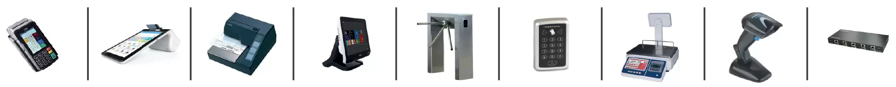
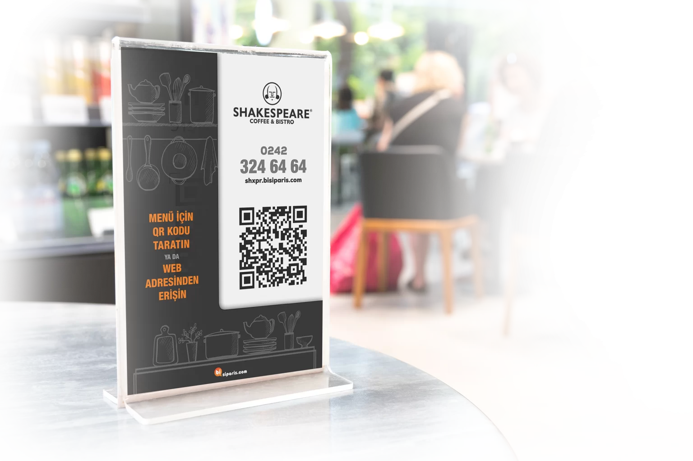
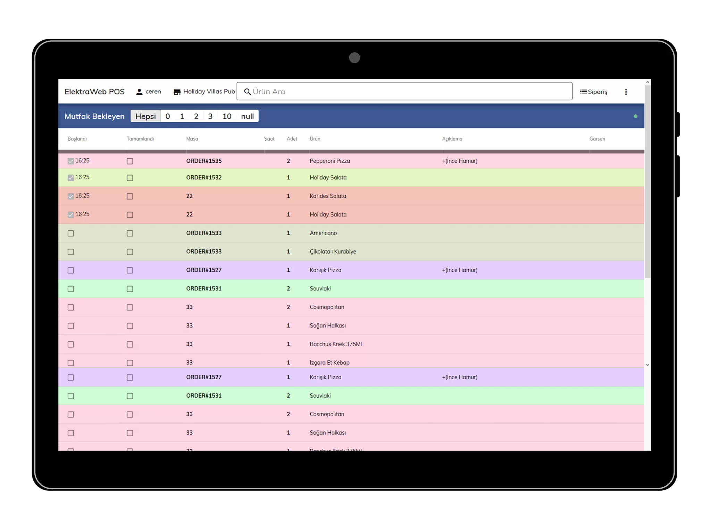
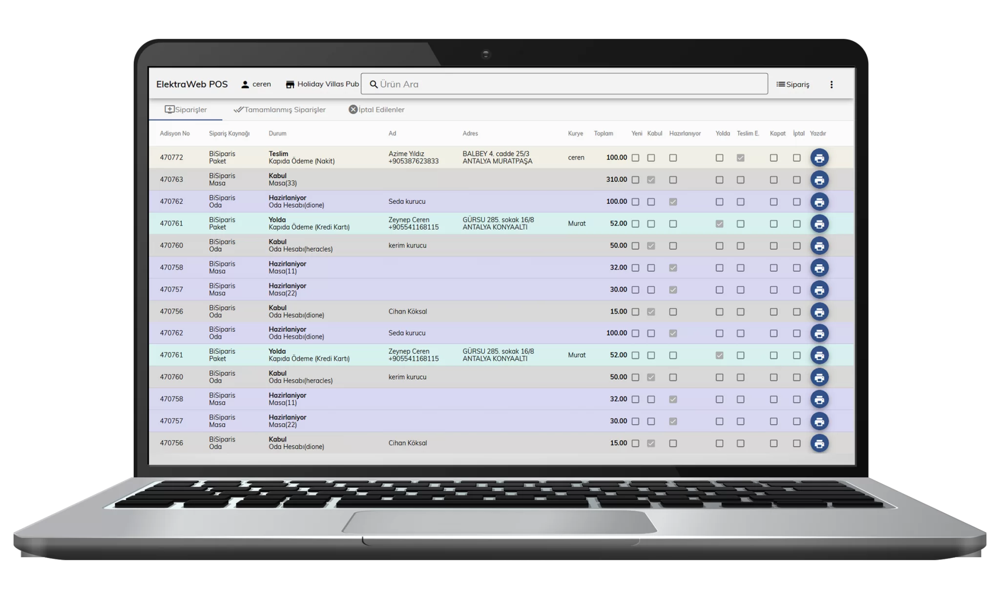

Elektraweb POS Restoran Yönetim Programı
En Kapsamlı Restoran Programı SIFIR YATIRIM MALİYETİ İLE…Restoranınızı işletirken ihtiyaç duyacağınız online sipariş, ÜCRETSİZ dijital menü ve paket sipariş programı, stok takibi, muhasebe, satın alma, demirbaş, garson ve masa takibi, rapor – analiz sunumları, adisyon takibi gibi pek çok özelliğe tek program üzerinden ulaşabileceksiniz. Üstelik tamamen bulutta olduğu için sıfır yatırım maliyeti ile… Hemen kayıt yapıp kullanmaya başlar ve sadece kullandığınız kadar ödersiniz
Restoranınızı Her Yerden Yönetebilirsiniz
Web tabanlı, bulut yapı ve mobil uyumluluk özellikleri ile internet bağlantısı olan her cihazdan ve her yerden programa ulaşabilirsiniz. Mümkün olan en düşük ağ bant genişliğini kullanır. Bu nedenle, yavaş bağlantılarda bile veri kaybı olmadan hızlı çalışır. Kurulum gerektirmez
Kullanımı Çok Kolaydır
Hızlıdır. Sade tasarımı ile kullanımı kolay ve kullanıcı dostu bir uygulamadır. Hızlı arama seçeneği ile aradığınız ürünün birkaç karakterini yazarak anında bulursunuz.
- Ürünlerin detaylarına kolayca ulaşılabilirsiniz. (İç malzeme, görseller, hazırlanma süresi..vb)
- Malzemelerdeki değişiklik ya da pişirme talepleri gibi ek istekleri mutfağa iletilebilirsiniz.
Siparişlerinizi Kolaylıkla Yönetebilirsini
Seçilen ürün adisyon yazdırılmadan istenildiği kadar arttırılıp azaltılabilir. Ayrıca ek bir ürün istenirse, o adisyona eklenip gönderilir. Hazır olan siparişler ilgili garsona anında iletilir
İstediğiniz Yöntemle Hesabı Alabilirsiniz
Nakit, kredi kartı, yemek kartı, hesaptan ödeme gibi pek çok yöntemle beraber, misafirlerinizin «parçalı» olarak bu yöntemlerle ödeme yapabilmesine de olanak sağlar. Değişik para birimlerinde hesap alıp, detaylı kasa takibi yapabilirisiniz.
Tüm Masaların Güncel Durumunu İzleyebilirsiniz
Masaların müsaitlik ve temizlik durumlarını tek ekrandan izleyebileceğiniz gibi, her masanın güncel adisyonlarını da rahatlıkla kontrol edebilirsiniz.
Donanım Değiştirmek Zorunda Kalmazsınız
Dokunmatik bilgisayar, mobil terminal, tablet, cep telefonu, turnike gibi her türlü donanımla tam uyumludur. Farklı bir sistemden Elektraweb POS’a geçiş yapsanız bile donanımlarınızı değiştirmek zorunda kalmazsınız.
RESTORANLARDA ONLINE SİPARİŞ YÖNETİMİ
- Tesisler hem mobil hem de webden ulaşılabilir olur. Misafirler dijital menüye online ya da kare kod okutarak ulaşabilir.
- Tesis içinde masaya veya odaya, tesis dışında adrese teslim veya gel-al siparişleri online alır.
- Online sipariş esnasında yemek fotoğraflarını, yemeğin içeriğini, alerjenleri, besin ve enerji değerlerini gösterir. Üstelik bunları müşterinin istediği dilde yapar.
- Müşterilerine kendi favori menülerini oluşturmasını sağlar, her siparişinde veya yaptığı paylaşımla gelen siparişinde puan kazandırır.
 Karekod ile Sipariş
Elektraweb POS’un tesise özel ürettiği karekodun kartvizitlerde, adisyonlarda flyer ve magnetlerde kullanımı daha hızlı ve kolay ulaşılabilir olunmasını sağlar. Böylece müşterileriniz masada, odasında, şezlongda, plajda, evinde, iş yerinde… her yerden dijital menünüze ulaşabilir ve güncel ürünleriniz arasından seçim yapıp kolaylıkla sipariş verebilir.
Hem tesis hem de müşterileri sosyal medyada ürünleri paylaşarak tanıtım yapabilir. Sosyal medya sayfalarına eklenen bir link ile direkt satış yapılabildiği gibi, süreli ve adetli kampanyalar da oluşturulabilir. Kendi sosyal medya hesapları üzerinden dijital menünüzü paylaşan müşterilerinize, onların paylaşımları ile gelen her siparişten puan ya da indirim tanımlayabilirsiniz.
Sanal POS ile Ödeme Alma
Sanal posunuza sıfır maliyetle hemen sahip olun online tahsilatlarınız hiç beklemeden ertesi günü banka hesabınızda olsun. Tüm banka kredi ve nakit kartlarını kabul edin, taksitlendirme yapın müşterilerinize puan kazandırın.
 Mutfak Takibi
- 10 ayrı mutfağa kadar sipariş printer veya ekranları ile mutfak takibi yapılabilir.
- Tüm siparişlerin mutfağa giriş, hazırlanma ve servis zamanlarını dokunmatik ekranlarla takip edilmesisağlanır.
- Garson ve mutfak arasında iletişim tamamen mobilgerçekleştirir.
 Paket Takibi
- Online veya telefon ile siparişin her aşamasını (kabul, hazırlanma, servis, teslim) hem siz hem de müşterileriniz kolayca takip edebilir.
- Hiçbir sipariş atlanmaz, anında teslim edilir. Kuryeleriniz sipariş ve yol bilgisine cep telefonundan ulaşır, ödemeyi teslimatla beraber alır.
Yemek Satış Sistemlerine Entegrasyon
Yemeksepeti, Getiryemek, Bisipariş gibi yemek sitelerine entegredir. Bu sitelerden aldığınız siparişler online olarak sisteminize düşer, siz ayrıca başka bir program kullanmak zorunda kalmazsınız.
Yazar Kasa Entegrasyonu
Tüm yazarkasalar ile entegre kullanabilirsiniz. Adisyonu yazdırdığınız anda tüm bilgiler POS cihazına aktarılır ve fişi otomatik kesilir.
ÜYELİK YÖNETİMİ, CRM, E-CÜZDAN
- Tek bir SMS onayı ile üye olabilme imkanı
- Profil oluşturup, favori menüler yaratabilme ya da eski siparişleri listeleyerek tekrar sipariş verebilme
- Üyenin profiline göre otomatik alerjen uyarısı
- Üyelere hem kendi siparişlerinden hem de sosyal medyada yaptıkları paylaşım sayesinde gelen siparişlerden puan kazandırma
- Kredi kartı ile e-cüzdana para yükleyebilme ve online sipariş esnasında e-cüzdan kullanarak ödeme yapabilme
- Tesis içerisinde karekod ile temassız ödeme için e-cüzdan kullanabilme
CRM
Üyeler kendi tercihlerini sisteme girerek işletmenin onları daha iyi tanımasını sağlarken, anket ve yorumlarla işletmeyi değerlendirir ve aksaklıkların hemen fark edilip düzeltilmesini sağlamış olur. Üyeler WhatsApp, SMS gibi kanallar üzerinden kampanya veya promosyonlardan haberdar edilebilir, evlilik, yaş günü ve yıldönümleri için özel indirimler uygulanabilir
Misafirleriniz ön ödeme yaparak dijital cüzdanlarına para yükleyebilir ve bu parayı online olarak veya tesis içinde cep telefonundaki karekodu göstererek harcayabilirler. E-Cüzdan bakiye dışında kazanılan puanları da gösterir ve harcanması için olanak sunar.
E-Kart
Misafirleriniz sisteme üye olur olmaz otomatik olarak bir dijital karta sahip olur. Bu kartı tesis içinde veya online sipariş esnasında telefonunu göstererek kullanabilir. Böylece geçiş kontrolü, ödeme, hızlı sipariş gibi birçok avantaja sahip olur.
ElektraWeb POS ile şunları yapabilirsiniz:
- Özel notlar, gruplanmış öğeler ve daha fazlası ile gelişmiş siparişler oluşturma
- kişiye özel tasarlanmış makbuzlar ve faturalar oluşturma ve basma
- Talep üzerine özel fiyatlar belirleyebilir ve belirli bir yüzde veya sabit tutar kullanarak indirim uygulayabilir
- siparişleri hemen al ve ayrı zamanlarda mutfağa gönder
- siparişleri ve durumlarını hiçbir şey yazdırmadan takip etmek için mutfak ve garson ekranlarına erişin
- seçili kalemlere veya sabit bir miktara dayalı bölünmüş çek ödemeleri yapma
- Sipariş verdiğinizde, sipariş talimatları otomatik olarak mutfak yazıcılarına gönderilir.
- İhtiyacınız olabilecek her şey için ayrıntılı raporlar sağlar.
- Basit ve sezgisel bir kullanıcı arayüzüne sahiptir.
- 7/24 müşteri desteğini destekler.